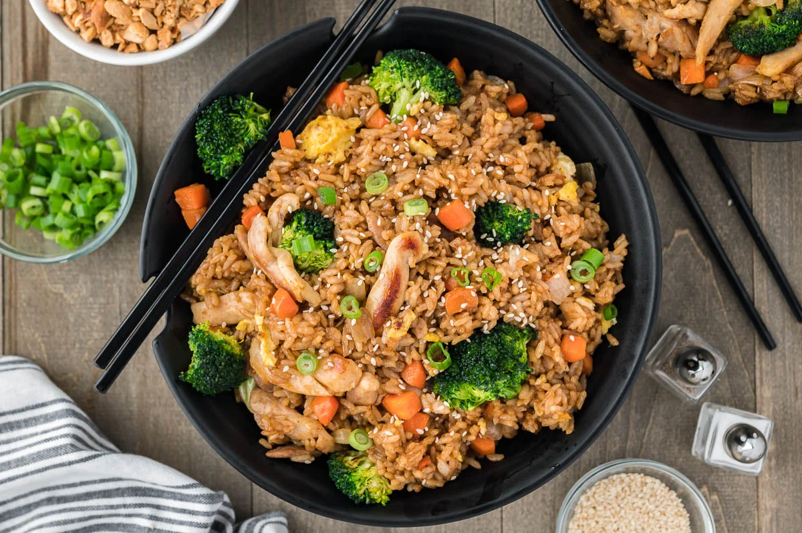

Fried Rice

Fried Rice: With a little prep, it's not too hard
Here's a story all about friend rice. Maybe it's a personal anecdote or something funny. Maybe it's a story about how I failed to make fried rice and had to try and try again.
Here's some sort of bs positive spin to try to convince you to make my friend rice. Also, please click on my links so I can make some monnnnnneeeeyyyyyy.
Ingredients
- White Long-Grain Rice: Day old and cold rice help to keep it from being mushy.
- Small White Onion: Make sure not to get a red one! They're too sweet.
- Peas and Carrots: They're veggies. Not much to say here.
- Eggs: But not all in one basket!
- Soy Sauce: Did you know it's actually made from soy beans?
- Green Onions: AKA chives or challots? Not really sure what the difference is. Although, I'm sure there is a difference...
Directions
- Preheat Skillet: Turn your skillet to medium high heat and pour sesame oil into the bottom of your skillet and add the onion, peas and carrots. Fry this until they are tender.
- Slide the veggies to the side: Pour the beaten eggs onto the other side. Use a spatula to scramble the eggs. Mix them together with the veggies.
- Add the rice: Combine it with the veggie and egg mixture. Pour the soy sauce on top and stir until it is heated throughout. Garnish with green onions.